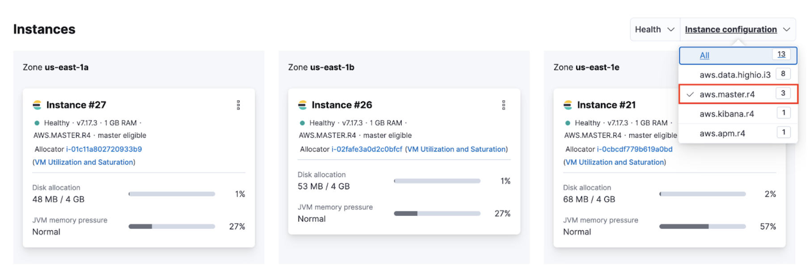

CPU usage exceeds the allowed threshold on master nodesedit
Health check
By default, the allowed CPU usage threshold is set at 85%.
- Log in to the Elasticsearch Add-On for Heroku console.
-
From the Elasticsearch Service panel, click the Quick link icon corresponding to the deployment that you want to manage.

-
Identify the IDs of your master nodes. On your deployment page, scroll down to Instances and filter your instance configuration by master. The IDs of your master nodes are in the title. In this example, the IDs are 21, 26 and 27:
The name of the instance configuration might differ depending on the cloud provider.
-
Navigate to the Performance page of your deployment. Check if the CPU usage of your master nodes exceeds 85%. Your master node has the format
instance-<ID>`, where<ID>`is the ID of the master node.
If you use Stack Monitoring, open Kibana from your deployment page and select Stack Monitoring from the menu or the search bar.
Stack Monitoring comes with out-of-the-box rules, but you need to enable them when prompted.
Possible causes
- The master node is overwhelmed by a large number of snapshots or shards.
-
The memory available on the master node is overwhelmed by these tasks:
-
External tasks initiated by clients
- Index, search, update
- Frequent template updates due to the Beats configuration
-
Internal tasks initiated by users
- Machine Learning jobs, watches, monitoring, ingest pipelines
-
Internal tasks initiated by Elasticsearch
- Nodes joining and leaving due to hardware failures
- Shard allocation due to nodes joining and leaving
- Configuration of ILM policies.
-
Resolutions
- Navigate to the Edit page of your deployment and increase the master node size.
- Upgrade the cluster to the latest version.
-
If the master node is overwhelmed by external tasks initiated by clients:
- Reduce the request rate or pause ingesting, searching, or updating from the client.
- Enable ingest and search-based autoscaling.
- Stop Beats to avoid frequent template updates.
-
If the master node is overwhelmed by internal tasks initiated by users:
- Check cluster-level pending tasks.
- Reduce the number of Machine Learning jobs or watches.
- Change the number of ingest pipelines or processors to use less memory.
-
If the master node is overwhelmed by internal tasks initiated by Elasticsearch:
- For nodes joining and leaving, this should resolve itself. If increasing the master nodes size doesn’t resolve the issue, contact support.
-
For shard allocation, inspect the progress of shards recovery. If there’s no progress, contact support.
-
Make sure
indices.recovery.max_concurrent_operationsis not aggressive, which could cause the master to be unavailable. -
Make sure
indices.recovery.max_bytes_per_secis set adequately to avoid impact on ingest and search workload.
-
Make sure
- Check ILM policies to avoid index rollover and relocate actions that are concurrent and aggressive.
- If the master node is overwhelmed by a large number of snapshots, reduce the number of snapshots in the repo.
- If the master node is overwhelmed by a large number of shards, reduce the number of shards on the node. For more information, check Size your shards.